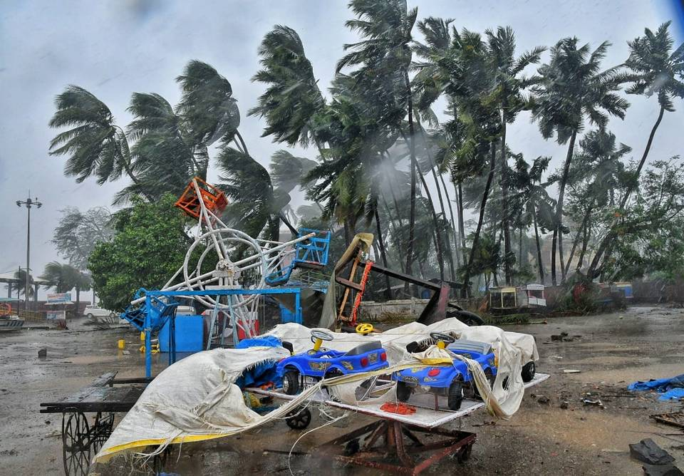

Alibaug

Severe cyclonic storm Nisarga made landfall in Maharashtra at about 1 pm, close to Alibaug amid rains and strong wind across the state’s coastal district. It is forecast to move north eastwards towards Mumbai and Thane, while weakening into a cyclonic storm. According to an Indian Meteorological Department (IMD) bulletin, the centre of the storm crossed the Maharashtra coast close to south of Alibaug. At 2.30 pm, it lay centered over coastal Maharashtra to the southeast of Alibaug, 75 km southeast of Mumbai and 65 km west of Pune. Alibaug recorded strong winds since morning with the speed at 102 kmph as of 2.30 pm, blowing off some thatched rooftops, loose metal sheets, uprooting trees and impacting network connectivity in some areas. District Police Superintendent Anil Paraskar told reporters that 13,000 people were evacuated in advance to safe spots and teams of 10 police officials and one government official were positioned in vulnerable villages for effective relief work, if required.“It will make landfall as a severe cyclonic storm with a wind speed of about 110 kmph gusting to 120 kmph. Even though the landfall site is south of Alibaug, extensive damage can be expected in Raigad, Mumbai, Thane and neighbouring areas,” said Sunita Devi, head, national weather forecasting centre. The diameter of the eye of the storm has decreased in the past hour and is about 65 km at present, indicating an intensification of the weather system. The wind speed too has increased from 85-95kmph to 90-100kmph (gusting to 110kmph).The sea surface temperature in parts of the Arabian Sea is 31 to 32 degree Celsius compared to 28 degree Celsius expected during this season.A 53-year-old man in Alibag died on Wednesday after an electric pole fell on him. Heavy rains continue to lash the coastal areas, with winds of 100-110 kmph causing damage in the low lying areas. Goa reported very heavy rainfall of 127 mm in the last 24 hours as the cyclone passed close to the coast. Ratnagiri has received over 30 mm rainfall in the last four hours. Scientists tracking the cyclone from Doppler Weather Radars at Mumbai and Goa, said the eye of the storm is roughly 65 km. According to IMD, coastal districts of Raigad, Mumbai, Thane, Palgarh in Maharashtra, along with Valsad, Navsari, Surat, Bhavnagar, Bharuch districts of Gujarat, and Daman and Dadra and Nagar Haveli are likely to bear the maximum impact of the cyclone. After the landfall, Nisarga is expected to maintain the intensity of cyclonic storm for next six hours and continue moving north-northeastwards across north Madhya Maharashtra. It will bring strong winds of 60-70 kmph gusting up to 80kmph over Pune, Ahmadnagar and adjoining Beed, Nashik and Aurangabad districts of Maharashtra. As many as 40 teams of the National Disaster Response Force (NDRF) have been deployed in the state and UT and more are being airlifted. Ships of the coast guard have been rescuing fishermen at sea. A 58-year-old man died when an electricity pole fell on him in Alibaug area, said Raigah District Collector Nidhi Choudhari. A 65-year-old woman called Manjabai Anant Navale, a resident of Vahagaon village in Khed tehsil, died as a wall of her house collapsed and tin sheets on the roof were blown away in the wind. In the third incident, 52-year-old Prakash Mokar, a resident of Mokarwadi in Haveli tehsil, also died after the roof of his house was blown away and he was injured while trying to catch the tin sheets. The fourth victim was a 10-year-old boy who died in Alibaug when a tree fell on him.
.jpg)
.jpg)
.jpg)